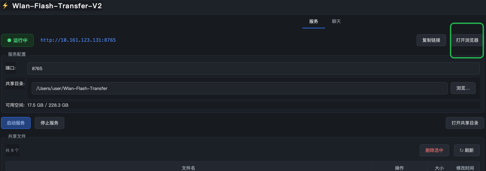
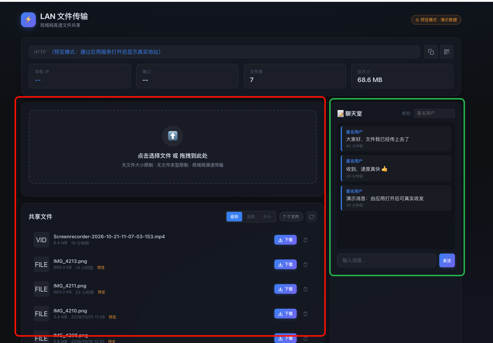
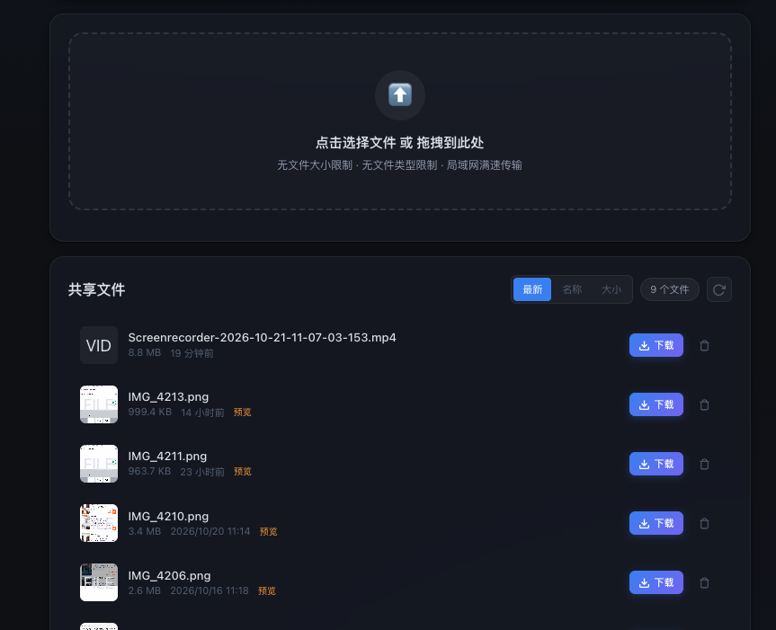
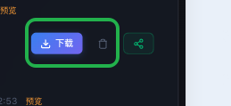
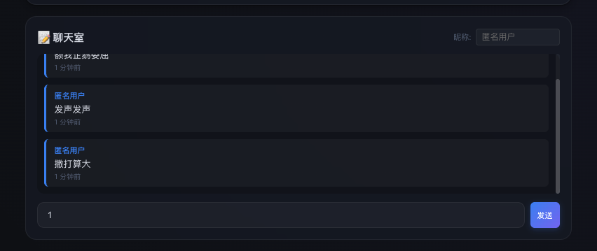
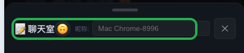
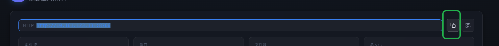

⚡ Wlan-Flash-Transfer 网页端 · 保姆级使用教程
适用网页端「布局E」新界面 —— 桌面等宽分栏 / 手机悬浮聊天 / 文件分页 /
一键分享 / emoji 头像聊天室。手机、平板、电脑通用,无需安装任何东西。
📱 手机 · 平板 · 电脑
🗂 文件分页 · 每页 8 个
💬 聊天实时互通
🔗 分享链接自带令牌
1进入网页端:三种方式
网页端由电脑上的桌面应用提供服务。共享方先在应用里点 「启动服务」,
状态徽标变为绿色 ● 运行中 后,窗口上会显示访问地址:

桌面应用:点「启动服务」→ 复制链接发给同事,或让大家扫二维码;「打开浏览器」在本机直接打开
1
扫码(推荐手机用户)
手机相机对准应用窗口里的二维码扫一下,直达页面。
2
输地址
浏览器输入应用显示的地址,如 http://192.168.1.20:8765(IP 和端口以应用窗口为准)。
3
点按钮(本机)
在电脑本机的话,直接点应用里的「打开浏览器」按钮。
前提:手机/电脑必须和共享方连着同一个局域网(同一个 Wi-Fi 或同一网线网络),否则地址打不开。
2页面总览:电脑和手机长什么样
网页按屏幕宽度自动切换布局,不需要任何设置:

🖥 电脑端:左侧「上传 + 共享文件」、右侧「聊天室」等宽分栏,两列底部自动对齐;顶部是地址栏、复制/二维码按钮和四个统计格
🖥 电脑(宽屏 > 980px):左右等宽分栏
┌──────────────────────────┬──────────────────────────┐
│ 📤 上传区(点击/拖拽/粘贴) │ 💬 聊天室 │
│ 📁 共享文件(排序/分页/操作) │ 昵称 + emoji 头像 │
│ ‹ 1 2 3 › 每页 8 个 │ 消息区 + 发送 │
└──────────────────────────┴──────────────────────────┘
📱 手机 / 窄屏(≤ 980px):文件优先 + 悬浮聊天
┌──────────────────────────┐
│ 📤 上传区 │ 右下角 💬 悬浮球
│ 📁 共享文件(分页) │ ┌────┐
│ ‹ 1 2 › │ │ 💬 │← 未读角标
└──────────────────────────┘ └────┘
点它 → 底部滑出全屏聊天面板
顶部统计格:本机 IP / 端口 / 文件数 / 总大小。手机上自动排成 2×2,信息完整不截断。
3上传文件:点选 / 拖拽 / 粘贴

页面顶部的虚线框就是上传区;下方「共享文件」列表实时展示已共享的文件
三种方式任选,都支持一次多个文件:
| 方式 | 操作 | 适合场景 |
|---|
| 点击选择 | 点上传区任意位置 → 文件选择框 → 按住 Ctrl/Cmd 多选 | 文件在深层文件夹 |
| 拖拽 | 把文件拖到上传区,边框变蓝时松手 | 手里正开着文件夹 |
| 粘贴 | 复制文件后在页面按 Ctrl+V / Cmd+V | 截图直接粘贴,聊天工具截图党最爱 |
- 每个文件一条独立进度条,实时显示百分比 + 速度(如
63% 8.4 MB/s),完成后变绿自动收起
- 传完立即出现在「共享文件」列表第 1 页
- 服务端上传前自动检查磁盘剩余空间,不足会明确报错
没有大小和类型限制——几个 GB 的视频、安装包都能传,局域网内跑满带宽。
4下载与预览
- 下载:点文件行末尾的 蓝色下载按钮,或直接点文件名
- 图片预览:jpg / png / gif / webp 等图片直接显示缩略图,并带橙色「预览」标记
- 其他类型显示类型角标(PDF / ZIP / VID / AUD…),一眼识别
5分享文件(绿按钮)

每个文件行固定三个等大按钮:蓝=下载 ·灰=删除 ·绿=分享
最右侧的 绿色分享按钮,手机和电脑表现不同:
| 设备 | 点击后 |
|---|
| 📱 手机 | 弹出系统分享面板——可直接发到微信、QQ、钉钉等 |
| 💻 电脑 | 自动复制该文件的下载链接,右上角绿色提示「分享链接已复制」 |
分享出去的链接自带访问令牌——即使共享方开启了配对校验,同事点开链接即可直接下载,不用再输配对码。
注意:链接里带着你的访问凭证,请只发给可信的同事,不要公开张贴。
6删除文件(灰按钮)
2
弹出确认框「确定删除 xxx 吗?此操作不可撤销」
3
点「确认」→ 文件消失、列表自动刷新;当前页删空会自动退回上一页
删除立即生效,没有回收站。删错只能重新上传。
7文件列表:排序 / 分页 / 刷新
- 排序:「最新 / 名称 / 大小」三档切换;切换后自动回到第 1 页
- 分页:每页固定 8 个文件,底部
‹ 1 2 … n › 页码导航;只有一页时页码自动隐藏
- 刷新:右上角圆形箭头按钮;别人传了新文件后点一下即可看到
- 统计:顶部「文件数 / 总大小」实时汇总共享目录
8聊天室:昵称 / 头像 / 发消息

桌面端聊天室固定在右侧,发消息、看回复不用切页面
8.1 昵称
- 首次打开按设备自动生成,如
iPhone-8231、Mac Chrome-3387,永久固定
- 输入框留空 = 使用自动昵称(灰字就是它);填了自定义昵称则优先用自定义,且自动记住
8.2 头像
- 头像由昵称自动计算的 emoji(24 选 1)——改昵称即换头像
- 同一昵称在所有人屏幕上头像一致;历史消息同样有头像
8.3 发消息
- 输入后按 Enter 或点「发送」;单条最多 2000 字
- 电脑端与手机端实时互通,共享方在桌面应用「聊天」标签页同步可见
- 服务端保留最近 200 条记录,刷新页面不丢
9手机上的聊天:悬浮球与底部面板

手机端聊天面板从底部滑出:第一行标题 + 关闭,第二行头像 + 昵称(整行可用),消息区几乎全屏
1
手机上聊天入口是右下角 💬 悬浮球,常驻可见、不挡文件操作
2
有人发消息时,悬浮球出现红色数字角标(未读条数,最多 99+)
4
收起:点上方遮罩 / 点右上角 ✕ / 按 Esc 任选
面板里昵称输入框占整行宽度,再长的设备名也显示得下;iPhone 底部横条区域已做安全区适配。
10复制链接与扫码

地址栏右侧:复制按钮(一键复制+绿色提示)、二维码按钮(弹出大图)
- 复制:一键完成,手机浏览器也有效(自动降级兼容);失败时会提示手动复制并自动选中地址
- 二维码:由共享方电脑本地生成,不依赖外网;同事扫码直达
- 开启配对时,复制的链接和二维码自动带访问令牌,扫码/点开即用
11配对码与只读模式(如已开启)
共享方可在桌面应用里控制两道开关,开启后网页端表现如下:
| 开关 | 网页端表现 |
|---|
| 开启配对 | 首次打开弹出「需要配对」层 → 输入桌面端显示的 4 位数字配对码 → 点「配 对」→ 刷新进入;配对一次长期有效 |
| 只读模式 | 上传区消失、聊天输入框消失,文件列表顶部出现 🔒 橙色横幅「只读模式」——仍可下载、预览、分享 |
配对码输错会再次弹出,请对照桌面端实时显示的 4 位码;开启配对后重启服务,码会重新生成。
12常见问题急救箱
地址打不开 / 一直转圈?
① 确认和共享方在同一局域网(同一 Wi-Fi);② 确认对方已点「启动服务」且显示 ● 运行中;③ 核对地址里的 IP 和端口与应用窗口一致。
点复制按钮没反应?
新版已兼容局域网 HTTP 环境。若仍失败,会出现红色「复制失败,请手动复制」——此时地址已自动选中,按 Ctrl+C 即可。
上传到一半失败了?
看进度条变红的原因:磁盘空间不足会明确写出需要/可用多少;网络闪断则把该文件重新上传一次即可。
手机上找不到聊天室?
在右下角 💬 悬浮球里,点开即见。见本文第 9 节。
别人发消息我怎么没提醒?
电脑端聊天常驻右侧同屏;手机端看悬浮球红色角标(不在聊天面板时才计数)。
网页会偷跑流量吗?
聊天列表每 3 秒一次极小请求;二维码本地生成;除此之外无任何外联。